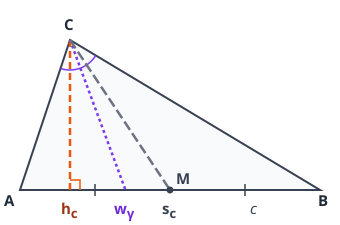
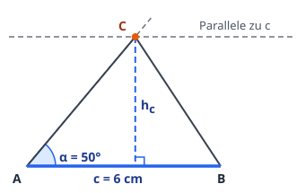

Schritte einer Konstruktion
Mit einem KI-Tutor lernen
Ein KI-Tutor erklärt dir diese Seite und hilft dir bei den Aufgaben. Wähl deinen Assistenten:
Mit Claude öffnen Mit ChatGPT öffnen Mit Mistral Vibe öffnen
Du nutzt dein eigenes Konto beim Anbieter. Der Assistent ist kein Angebot von lernapps.net: lernapps liefert nur Inhalte und Aufgaben. Die Wahl gilt für alle Seiten, nur auf diesem Gerät.
Ziel: Ich kann die Schritte einer Konstruktion ordnen, auch mit Höhe, Seiten- oder Winkelhalbierender. Der Kongruenzsatz sagt dir, ob es klappt – hier planst du, wie.
Probier zuerst
Aufgabe
Lösung
die Seite a
Die Länge von a ist nicht gegeben.
den Winkel α
Einen Winkel trägst du an einer Strecke an, die fehlt noch.
den Punkt C
C ist das Ergebnis der Konstruktion.
die Seite c richtige Antwort
α liegt bei A und β bei B – beide an c.
Fang mit der Seite an, an der die gegebenen Winkel liegen. Das ist hier c.
Erst planen, dann zeichnen
Die dritte Ecke findest du immer als Schnittpunkt: von zwei Kreisen, von zwei Schenkeln oder von einem Kreis und einem Schenkel. Darum zeichnest du zuerst eine gegebene Seite, an der möglichst viele gegebene Stücke liegen – wie c in der Aufgabe oben. An ihren Enden trägst du ab, was gegeben ist.

SWS mit b = 5 cm, c = 6 cm, α = 50°: C ist der Schnittpunkt von Kreisbogen und Schenkel.
Quelle: eigene Zeichnung. Lizenz: CC-BY-4.0.| Satz | zuerst | dritte Ecke als Schnittpunkt von |
|---|---|---|
| SSS | eine Seite | zwei Kreisen |
| SWS | eine Seite am Winkel | Kreis und Schenkel |
| WSW | die Seite zwischen den Winkeln | zwei Schenkeln |
| SsW | die Seite am Winkel | Kreis und Schenkel |
Im Wettbewerb sind oft Linien gegeben, die keine Seite sind. Von C zur Seite c gehen drei: die Höhe , die Seitenhalbierende und die Winkelhalbierende .

Die Höhe trifft c im rechten Winkel, die Seitenhalbierende in der Mitte M. Die Winkelhalbierende teilt γ in zwei gleiche Winkel.
Quelle: eigene Zeichnung. Lizenz: CC-BY-4.0.So helfen sie dir, C zu finden:
- gegeben: C ist von c entfernt, liegt also auf der Parallelen zu c im Abstand .
- gegeben: Konstruiere die Mitte M von c (Mittelsenkrechte). C liegt auf dem Kreis um M mit Radius .
- gegeben: Halbiere γ und trage auf der Winkelhalbierenden ab. Ihr Endpunkt liegt auf c.
Ein Beispiel
Konstruktion mit c = 6 cm, α = 50° und der Höhe 4 cm
- Planfigur skizzieren, c, α und färben.
- c = 6 cm zeichnen, Endpunkte A und B.
- An A den Winkel α = 50° antragen.
- Die Parallele zu c im Abstand 4 cm zeichnen.
- Wo sie den freien Schenkel von α schneidet, liegt C. C mit B verbinden.

Die Höhe selbst musst du nicht zeichnen – die Parallele zeigt dir, wo C liegen kann.
Quelle: eigene Zeichnung. Lizenz: CC-BY-4.0.Drei Linien, drei Bedeutungen
Merke
Höhe, Seitenhalbierende und Winkelhalbierende gehen alle von C zur Seite c, aber an verschiedene Stellen. Die Höhe trifft c im rechten Winkel, die Seitenhalbierende in der Mitte, die Winkelhalbierende teilt γ. Nur wenn a und b gleich lang sind, fallen alle drei zusammen.
Jetzt du
Aufgabe
Drei Beispielaufgaben, jede mit ihrer Lösung:
Aufgabe Nr. 1
Gegeben sind b = 6 cm, c = 4 cm, α = 55°. Womit beginnst du die Konstruktion?
Tipp
Skizziere die Planfigur. An welcher gegebenen Seite liegen die gegebenen Winkel?
Lösung
- α liegt bei A. Dort treffen sich b und c: Der Winkel liegt zwischen den beiden Seiten.
- Du zeichnest zuerst die Seite c.
Richtige Antwort: die Seite c
Aufgabe Nr. 2
Gegeben sind a = 5 cm, b = 7 cm, γ = 40°. Womit beginnst du die Konstruktion?
Tipp
Skizziere die Planfigur. An welcher gegebenen Seite liegen die gegebenen Winkel?
Lösung
- γ liegt bei C. Dort treffen sich a und b: Der Winkel liegt zwischen den beiden Seiten.
- Du zeichnest zuerst die Seite a.
Richtige Antwort: die Seite a
Aufgabe Nr. 3
Gegeben sind b = 5 cm, α = 50°, γ = 60°. Womit beginnst du die Konstruktion?
Tipp
Skizziere die Planfigur. An welcher gegebenen Seite liegen die gegebenen Winkel?
Lösung
- α liegt bei A, γ bei C. Beide liegen an der Seite b = CA.
- Du zeichnest zuerst die Seite b.
Richtige Antwort: die Seite b
Aufgabe
Lösung
Richtige Antwort: 1. Planfigur skizzieren, b, c und α färben, 2. c = 6 cm zeichnen, Endpunkte A und B, 3. an A den Winkel α = 50° antragen, 4. Kreis um A mit r = 5 cm: Er schneidet den freien Schenkel in C., 5. C mit B verbinden
α liegt zwischen b und c. Nach c kommt α, dann trägst du b mit dem Zirkel auf dem freien Schenkel ab.
Aufgabe
Lösung
Richtige Antwort: 1. Planfigur skizzieren, a, b und α färben, 2. b = 5 cm zeichnen, Endpunkte A und C, 3. an A den Winkel α = 60° antragen, 4. Kreis um C mit r = 7 cm: Er schneidet den freien Schenkel in B., 5. B mit C verbinden
α liegt an b, also fängst du mit b an. a = BC beginnt bei C – darum der Kreis um C.
Aufgabe
Lösung
Richtige Antwort: Höhe – trifft c im rechten Winkel; Seitenhalbierende – trifft c in der Mitte; Winkelhalbierende – teilt γ in zwei gleiche Winkel
Alle drei beginnen bei C. Sie unterscheiden sich darin, wo und wie sie c treffen.
Aufgabe
Lösung
Richtige Antwort: 1. Planfigur skizzieren, c, b und die Seitenhalbierende färben, 2. c = 6 cm zeichnen, Endpunkte A und B, 3. die Mitte M von c mit der Mittelsenkrechten konstruieren, 4. Kreis um M mit r = 4 cm und Kreis um A mit r = 5 cm zeichnen, 5. Schnittpunkt der Kreise oberhalb von c ist C; C mit A und B verbinden
Die Seitenhalbierende endet in der Mitte von c. Darum brauchst du M, bevor du den Kreis mit r = 4 cm zeichnen kannst.
Aufgabe
Lösung
Richtige Antwort: 1. Planfigur skizzieren, b, γ und die Winkelhalbierende färben, 2. b = 5 cm zeichnen, Endpunkte C und A, 3. an C den Winkel γ = 80° antragen, 4. γ halbieren und auf der Winkelhalbierenden von C aus 4 cm abtragen: Punkt D, 5. Gerade von A durch D zeichnen: Sie schneidet den freien Schenkel von γ in B.
Der Endpunkt D der Winkelhalbierenden liegt auf c = AB. Darum liegt B auf der Geraden durch A und D.
Aufgabe
Drei Beispielaufgaben, jede mit ihrer Lösung:
Aufgabe Nr. 1
Du hast ein Dreieck mit c = 6 cm konstruiert. Die Höhe ist 8 cm lang, die Seitenhalbierende ist 11 cm lang. Zur Probe berechnest du den Flächeninhalt. Wie groß ist er?
Tipp
Welche der beiden Linien steht im rechten Winkel auf c?
Lösung
- – die Seitenhalbierende ist keine Höhe.
- Der Flächeninhalt ist 24 cm².
Richtige Antwort: 24 cm²
Aufgabe Nr. 2
Du hast ein Dreieck mit c = 8 cm konstruiert. Die Höhe ist 10 cm lang, die Seitenhalbierende ist 12 cm lang. Zur Probe berechnest du den Flächeninhalt. Wie groß ist er?
Tipp
Welche der beiden Linien steht im rechten Winkel auf c?
Lösung
- – die Seitenhalbierende ist keine Höhe.
- Der Flächeninhalt ist 40 cm².
Richtige Antwort: 40 cm²
Aufgabe Nr. 3
Du hast ein Dreieck mit c = 13 cm konstruiert. Die Höhe ist 6 cm lang, die Seitenhalbierende ist 7 cm lang. Zur Probe berechnest du den Flächeninhalt. Wie groß ist er?
Tipp
Welche der beiden Linien steht im rechten Winkel auf c?
Lösung
- – die Seitenhalbierende ist keine Höhe.
- Der Flächeninhalt ist 39 cm².
Richtige Antwort: 39 cm²
Als Nächstes prüfst du eine fertige Konstruktion – mit Rechnen und Nachmessen.
Fehler gefunden oder eine Idee für diese App?